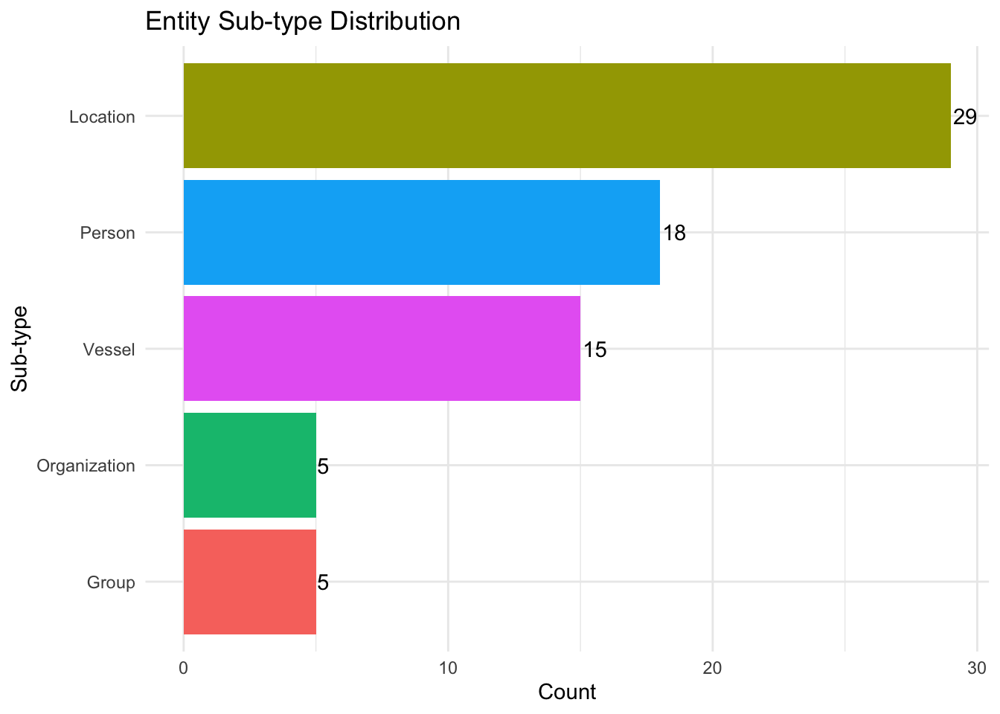
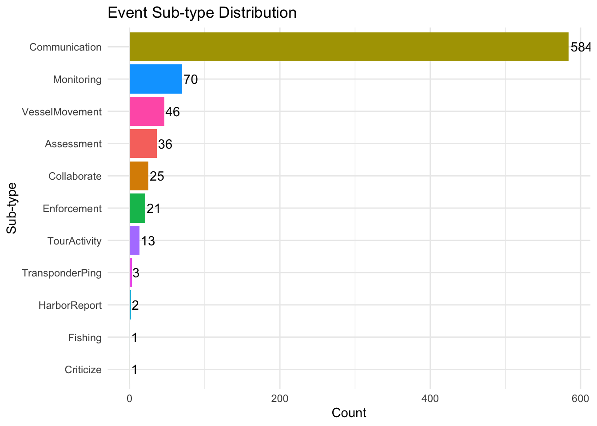

Over the past decade, the community of Oceanus has faced numerous transformations and challenges evolving from its fishing-centric origins. Following major crackdowns on illegal fishing activities, suspects have shifted investments into more regulated sectors such as the ocean tourism industry, resulting in growing tensions. This increased tourism has recently attracted the likes of international pop star Sailor Shift, who announced plans to film a music video on the island.
Clepper Jessen, a former analyst at FishEye and now a seasoned journalist for the Hacklee Herald, has been keenly observing these rising tensions. Recently, he turned his attention towards the temporary closure of Nemo Reef. By listening to radio communications and utilizing his investigative tools, Clepper uncovered a complex web of expedited approvals and secretive logistics. These efforts revealed a story involving high-level Oceanus officials, Sailor Shift’s team, local influential families, and local conservationist group The Green Guardians, pointing towards a story of corruption and manipulation.
Your task is to develop new and novel visualizations and visual analytics approaches to help Clepper get to the bottom of this story
List of 5
$ directed : logi TRUE
$ multigraph: logi FALSE
$ graph :List of 4
..$ mode : chr "static"
..$ edge_default: Named list()
..$ node_default: Named list()
..$ name : chr "VAST_MC3_Knowledge_Graph"
$ nodes :'data.frame': 1159 obs. of 31 variables:
..$ type : chr [1:1159] "Entity" "Entity" "Entity" "Entity" ...
..$ label : chr [1:1159] "Sam" "Kelly" "Nadia Conti" "Elise" ...
..$ name : chr [1:1159] "Sam" "Kelly" "Nadia Conti" "Elise" ...
..$ sub_type : chr [1:1159] "Person" "Person" "Person" "Person" ...
..$ id : chr [1:1159] "Sam" "Kelly" "Nadia Conti" "Elise" ...
..$ timestamp : chr [1:1159] NA NA NA NA ...
..$ monitoring_type : chr [1:1159] NA NA NA NA ...
..$ findings : chr [1:1159] NA NA NA NA ...
..$ content : chr [1:1159] NA NA NA NA ...
..$ assessment_type : chr [1:1159] NA NA NA NA ...
..$ results : chr [1:1159] NA NA NA NA ...
..$ movement_type : chr [1:1159] NA NA NA NA ...
..$ destination : chr [1:1159] NA NA NA NA ...
..$ enforcement_type : chr [1:1159] NA NA NA NA ...
..$ outcome : chr [1:1159] NA NA NA NA ...
..$ activity_type : chr [1:1159] NA NA NA NA ...
..$ participants : int [1:1159] NA NA NA NA NA NA NA NA NA NA ...
..$ thing_collected :'data.frame': 1159 obs. of 2 variables:
.. ..$ type: chr [1:1159] NA NA NA NA ...
.. ..$ name: chr [1:1159] NA NA NA NA ...
..$ reference : chr [1:1159] NA NA NA NA ...
..$ date : chr [1:1159] NA NA NA NA ...
..$ time : chr [1:1159] NA NA NA NA ...
..$ friendship_type : chr [1:1159] NA NA NA NA ...
..$ permission_type : chr [1:1159] NA NA NA NA ...
..$ start_date : chr [1:1159] NA NA NA NA ...
..$ end_date : chr [1:1159] NA NA NA NA ...
..$ report_type : chr [1:1159] NA NA NA NA ...
..$ submission_date : chr [1:1159] NA NA NA NA ...
..$ jurisdiction_type: chr [1:1159] NA NA NA NA ...
..$ authority_level : chr [1:1159] NA NA NA NA ...
..$ coordination_type: chr [1:1159] NA NA NA NA ...
..$ operational_role : chr [1:1159] NA NA NA NA ...
$ edges :'data.frame': 3226 obs. of 5 variables:
..$ id : chr [1:3226] "2" "3" "5" "3013" ...
..$ is_inferred: logi [1:3226] TRUE FALSE TRUE TRUE TRUE TRUE ...
..$ source : chr [1:3226] "Sam" "Sam" "Sam" "Sam" ...
..$ target : chr [1:3226] "Relationship_Suspicious_217" "Event_Communication_370" "Event_Assessment_600" "Relationship_Colleagues_430" ...
..$ type : chr [1:3226] NA "sent" NA NA ...
Next, the code chunk below will be used to join and convert from_id and to_id to integer indices. At the same time we also drop rows with unmatched nodes.
Show code
mc3_edges_indexed <- mc3_edges_cleaned %>%left_join(node_index_lookup, by =c("from_id"="id")) %>%rename(from = .row_id) %>%left_join(node_index_lookup, by =c("to_id"="id")) %>%rename(to = .row_id) %>%select(from, to, is_inferred, type) %>%filter(!is.na(from) &!is.na(to))
Next the code chunk below is used to subset nodes to only those referenced by edges.
Classes 'tbl_graph', 'igraph' hidden list of 10
$ : num 1159
$ : logi TRUE
$ : num [1:3226] 0 0 0 0 0 0 0 1 1 1 ...
$ : num [1:3226] 1137 356 746 894 875 ...
$ : NULL
$ : NULL
$ : NULL
$ : NULL
$ :List of 4
..$ : num [1:3] 1 0 1
..$ : Named list()
..$ :List of 31
.. ..$ type : chr [1:1159] "Entity" "Entity" "Entity" "Entity" ...
.. ..$ label : chr [1:1159] "Sam" "Kelly" "Nadia Conti" "Elise" ...
.. ..$ name : chr [1:1159] "Sam" "Kelly" "Nadia Conti" "Elise" ...
.. ..$ sub_type : chr [1:1159] "Person" "Person" "Person" "Person" ...
.. ..$ id : chr [1:1159] "Sam" "Kelly" "Nadia Conti" "Elise" ...
.. ..$ timestamp : chr [1:1159] NA NA NA NA ...
.. ..$ monitoring_type : chr [1:1159] NA NA NA NA ...
.. ..$ findings : chr [1:1159] NA NA NA NA ...
.. ..$ content : chr [1:1159] NA NA NA NA ...
.. ..$ assessment_type : chr [1:1159] NA NA NA NA ...
.. ..$ results : chr [1:1159] NA NA NA NA ...
.. ..$ movement_type : chr [1:1159] NA NA NA NA ...
.. ..$ destination : chr [1:1159] NA NA NA NA ...
.. ..$ enforcement_type : chr [1:1159] NA NA NA NA ...
.. ..$ outcome : chr [1:1159] NA NA NA NA ...
.. ..$ activity_type : chr [1:1159] NA NA NA NA ...
.. ..$ participants : int [1:1159] NA NA NA NA NA NA NA NA NA NA ...
.. ..$ reference : chr [1:1159] NA NA NA NA ...
.. ..$ date : chr [1:1159] NA NA NA NA ...
.. ..$ time : chr [1:1159] NA NA NA NA ...
.. ..$ friendship_type : chr [1:1159] NA NA NA NA ...
.. ..$ permission_type : chr [1:1159] NA NA NA NA ...
.. ..$ start_date : chr [1:1159] NA NA NA NA ...
.. ..$ end_date : chr [1:1159] NA NA NA NA ...
.. ..$ report_type : chr [1:1159] NA NA NA NA ...
.. ..$ submission_date : chr [1:1159] NA NA NA NA ...
.. ..$ jurisdiction_type: chr [1:1159] NA NA NA NA ...
.. ..$ authority_level : chr [1:1159] NA NA NA NA ...
.. ..$ coordination_type: chr [1:1159] NA NA NA NA ...
.. ..$ operational_role : chr [1:1159] NA NA NA NA ...
.. ..$ new_index : int [1:1159] 1 2 3 4 5 6 7 8 9 10 ...
..$ :List of 2
.. ..$ is_inferred: logi [1:3226] TRUE FALSE TRUE TRUE TRUE TRUE ...
.. ..$ type : chr [1:3226] NA "sent" NA NA ...
$ :<environment: 0x10f8d8d90>
- attr(*, "active")= chr "nodes"
# Define color mappingsubtype_colors <-c("Person"="#2ca5ff","Organization"="#f5ee15","Vessel"="#FB7E81","Group"="#25e158","Location"="#ec4bff")mc3_nodes_final %>%filter(type =="Entity") %>%count(sub_type, sort =TRUE) %>%ggplot(aes(x =reorder(sub_type, n), y = n, fill = sub_type)) +geom_col() +coord_flip() +geom_text(aes(label = n), hjust =-0.1) +labs(title ="Entity Sub-type Distribution", x ="Sub-type", y ="Count") +theme_minimal() +theme(legend.position ="none")

5.3 Event type distribution
Show code
mc3_nodes_final %>%filter(type =="Event") %>%count(sub_type, sort =TRUE) %>%ggplot(aes(x =reorder(sub_type, n), y = n, fill = sub_type)) +geom_col() +coord_flip() +geom_text(aes(label = n), hjust =-0.1) +labs(title ="Event Sub-type Distribution", x ="Sub-type", y ="Count") +theme_minimal() +theme(legend.position ="none")

5.4 List of communication participants
Show code
library(DT)# Step 1: Get all Communication Event IDscomm_event_ids <- mc3_nodes_cleaned %>%filter(type =="Event", sub_type =="Communication") %>%pull(id)# Step 2: Extract 'sent' edges for communication eventscomm_sent_edges <- mc3_edges_cleaned %>%filter(type =="sent", to_id %in% comm_event_ids) %>%select(comm_id = to_id, sender_id = from_id)# Step 3: Extract 'received' edges for same communication eventscomm_received_edges <- mc3_edges_cleaned %>%filter(type =="received", from_id %in% comm_event_ids) %>%select(comm_id = from_id, receiver_id = to_id)# Step 4: Join sent and received edges by communication IDcomm_pairs <- comm_sent_edges %>%inner_join(comm_received_edges, by ="comm_id")# Step 5: Add sender and receiver labelsparticipants_named <- comm_pairs %>%left_join(mc3_nodes_cleaned %>%select(id, sender_label = label), by =c("sender_id"="id")) %>%left_join(mc3_nodes_cleaned %>%select(id, receiver_label = label), by =c("receiver_id"="id"))# Step7: Interactive summary of top sender–receiver pairsparticipants_named %>%count(sender_label, receiver_label, sort =TRUE) %>%datatable(caption ="Top Communication Pairs (Sender → Receiver)",colnames =c("Sender", "Receiver", "Message Count"),options =list(pageLength =10, autoWidth =TRUE),rownames =FALSE )
5.4.1 Visualization of communication participants network
This code creates an interactive communication network graph using visNetwork, where:
Each node represents a person or entity, node size is based on total messages sent by that participant.
Each edge (arrow) represents a communication sent from one participant to another, the thicker the edge, the more message sent to that particular receiver.
From this plot, it reveals that some pairs (e.g., Miranda Jordan and Clepper Jensen) mainly communicate with each other, suggesting isolated or private channels outside the broader network.
4.4c - Density plot of Daily half-hourly message volume over the 2 weeks period:
The faceted density plot that shows the distribution of communication events by time of day, broken down for each day in the dataset. It helps to visually detect temporal communication patterns, intensity, and consistency over multiple days.
1a. What are the identifiable daily temporal patterns in communications?
The daily communication volume fluctuates slightly between 34 and 49 messages, with an average of approximately 42 messages per day, highlighting a stable overall activity level. Notably, the highest volume occurs on 11th October (49 messages), immediately following the lowest volume the day before on 10th October (34 messages)—a sharp rebound that may signal a response to specific events or operational needs. Despite these fluctuations, the system maintains a consistent tempo across the two weeks.
The temporal analysis using both the heat map and time series plots reveals a pronounced morning-centric communication rhythm. The vast majority of radio traffic is concentrated between 9:00 AM and 11:30 AM, with the most intense peaks typically occurring between 10:00 and 11:00 AM. With reference to the Density plot of Daily half-hourly message volume, of the 14 days, we see message density peaks at 10:30 AM on 9 days, while on 3 days, it peaks at 12:30 PM.
For instance if we were to based in on the hourly plot, 5th October (Fri) and 11th October (Thu) both register their highest single-hour counts at 10:00 AM at 24 and 21 messages respectively. Communication activity drops off steeply after lunchtime, with more than 90% of the days showing little to no activity after 2:30 PM. This pattern suggests a highly structured daily workflow, where key decisions and coordination are front-loaded in the day. Importantly, the hourly heat map also indicates that this routine holds across both weekdays and weekends—communication volumes and peak hours remain similar, underlining the operational regularity of the group regardless of the day of week.
1b. How do these patterns shift over the two weeks of observations?
Over the two-week period, while the timing and structure of communication peaks remain broadly consistent, there are subtle shifts in both intensity and timing. Some days, such as 3rd, 5th, 11th and 12th October, see particularly high spikes in the mid-morning, which may correspond to critical events, decision points, or heightened urgency. The sharp dip on October 8th and 13th, immediately after a period of “surge” (3rd - 7th and 9th to 12th October), points to possible responses to interruptions, lulls, or triggering incidents. Overall, although the daily messaging routine is remarkably stable, these bursts and brief lulls provide clues to changing circumstances or stress points in the operation—an analytical signal that warrants closer inspection of event logs or external triggers for those dates.
Another notable change in the communication pattern is observed during the weekends. In the first week, weekend communication peaks occurred earlier, typically between 10:00 AM and 11:30 AM, closely mirroring the weekday rhythm. However, in the second week, the weekend peaks shifted noticeably later, with the highest message volumes concentrated around 12:00 PM and 1:00 PM. This shift not only marks a departure from the otherwise stable early-morning communication structure but also suggests an adaptive or reactive operational schedule—potentially in response to evolving events, increased coordination needs, or changing priorities as the observation period progressed. The contrast between the two weekends is clear in the heatmap, underscoring the importance of monitoring such shifts as possible indicators of underlying changes in group behavior or external pressures.
5 - Task 1c: Focus on a Particular Entity - “Nadia Conti”
VAST Challenge Task & Question 1c
Clepper found that messages frequently came in at around the same time each day.
Focus on a specific entity and use this information to determine who has influence over them.
5.1 - Data Preparation for “Nadia Conti” Influence Analysis
We first extracted the relevant communication edges from the dataset, pairing “sent” and “received” communication events to form entity-to-entity links. We retained only those edges where both nodes represent real-world entities (Person, Organization, Vessel, Group, or Location), ensuring that our analysis focuses on the meaningful actors in the Oceanus network.
Show code
# Extract sent and received communication event edgessent_edges <- mc3_edges_cleaned %>%filter(type =="sent") %>%select(source_entity = from_id, event = to_id)received_edges <- mc3_edges_cleaned %>%filter(type =="received") %>%select(event = from_id, target_entity = to_id)# Pair sent and received to form communication edgespaired_edges <- sent_edges %>%inner_join(received_edges, by ="event") %>%select(from = source_entity, to = target_entity)# Add unmatched sent and received edges (optional, for completeness)single_sent_edges <- sent_edges %>%select(from = source_entity, to = event)single_received_edges <- received_edges %>%select(from = event, to = target_entity)all_edges <-bind_rows(paired_edges, single_sent_edges, single_received_edges) %>%distinct()# Identify entity nodes (Person, Organization, Vessel, Group, Location)entity_ids <- mc3_nodes_cleaned %>%filter(sub_type %in%c("Person", "Organization", "Vessel", "Group", "Location")) %>%pull(id) %>%as.character()entity_edges <- all_edges %>%filter(as.character(from) %in% entity_ids, as.character(to) %in% entity_ids)entity_nodes <- mc3_nodes_cleaned %>%filter(sub_type %in%c("Person", "Organization", "Vessel", "Group", "Location")) %>%select(id, label, sub_type)
5.2 - Build the Global Network and Compute Centrality
Using these cleaned and filtered edges and nodes, we built a global directed graph representing the Oceanus community. We then computed key network centrality metrics for each node—PageRank, betweenness, and degree—quantifying the influence and connectivity of every entity in the overall network.
Focusing on “Nadia Conti”, we identified her node and extracted her two-step ego network, capturing both direct and indirect connections within the broader network. This local subgraph reveals Nadia’s immediate sphere of influence and the key players connected to her.
We visualized Nadia’s ego network using node size, shape, and color to represent centrality and entity type. We also summarized centrality metrics in clear tables, ranking all ego network members by PageRank, Betweenness, and Degree. This allows for direct identification of the most influential, best-connected, and most strategic actors in Nadia Conti’s communication environment.
The overview network visualization reveals that Nadia Conti is centrally embedded in the Oceanus communication web, maintaining direct and indirect connections with major actors such as Neptune (Vessel), V. Miesel Shipping (Organization), Elise (Person), and others. The use of color and shape coding in the network allows for quick identification of the different types of entities in Nadia’s influence neighborhood.
5.5 - Centrality Tables for Nadia’s Ego Network
On both the global and Nadia-focused ego networks, we computed standard network centrality metrics for all nodes:
PageRank (overall influence),
Betweenness (information brokerage/intermediary role), and
Degree (number of direct connections).
These measures quantify the importance and structural roles of each entity relative to Nadia and the broader community.
Centrality Metrics and Direct & Indirect Influences
By calculating centrality metrics within Nadia’s two-hop ego network, we observe that the most influential nodes in her environment—by PageRank, betweenness, and degree—are Neptune, V. Miesel Shipping, and Elise. Nadia herself consistently ranks among the top nodes by these measures, highlighting her role as both an influencer and an information bridge. Entities such as Neptune and V. Miesel Shipping, which also score highly in centrality, exert considerable influence over Nadia’s information flow and access to other parts of the network.
Degree centrality analysis shows Nadia maintains multiple direct connections, particularly with other highly active nodes, ensuring she is closely linked to key hubs in the network. Betweenness centrality further reveals that Nadia is not only well-connected but also acts as an important intermediary, facilitating communication between otherwise distant parts of the network. PageRank confirms that her immediate environment is composed of actors with significant structural power, increasing the likelihood that Nadia is both influenced by, and exerts influence upon, the most pivotal players in Oceanus.
5.5.1 - PageRank for Nadia Conti
Show code
library(igraph)library(visNetwork)# -- Build the global network g as in your earlier code (using your entity_nodes/entity_edges) --g <-graph_from_data_frame(d = entity_edges, vertices = entity_nodes, directed =TRUE)# -- Get Nadia's index in g --nadia_label <-"Nadia Conti"target_index <-which(V(g)$label == nadia_label)# -- Extract Nadia's 1-hop ego network (all direct neighbors) --ego_1 <-make_ego_graph(g, order =1, nodes = target_index, mode ="all")[[1]]# 1. Compute PageRank for the ego networkV(ego_1)$pagerank <-page_rank(ego_1)$vector# 2. Prepare node data frame with your consistent color schemenodes_df_pagerank <-data.frame(id =V(ego_1)$name,label =V(ego_1)$label,group =V(ego_1)$sub_type,title =paste0("<b>", V(ego_1)$label, "</b><br>PageRank: ", round(V(ego_1)$pagerank, 4)),shape =ifelse(V(ego_1)$sub_type =="Person", "dot",ifelse(V(ego_1)$sub_type =="Organization", "square",ifelse(V(ego_1)$sub_type =="Vessel", "triangle",ifelse(V(ego_1)$sub_type =="Group", "star", "diamond")))),color =case_when(V(ego_1)$sub_type =="Person"~"#2ca5ff",V(ego_1)$sub_type =="Organization"~"#f5ee15",V(ego_1)$sub_type =="Vessel"~"#FB7E81",V(ego_1)$sub_type =="Group"~"#25e158",V(ego_1)$sub_type =="Location"~"#ec4bff",TRUE~"black" ),value =V(ego_1)$pagerank *30+5)# 3. Prepare edgesedges_df <-as_data_frame(ego_1, what ="edges") %>%rename(from = from, to = to)# 4. Plot with visNetworkvisNetwork(nodes_df_pagerank, edges_df, width ="100%", height ="400px") %>%visNodes(scaling =list(min =5, max =30),color =list(background = nodes_df_pagerank$color, border ="black"),shape = nodes_df_pagerank$shape ) %>%visEdges(arrows =list(to =list(enabled =TRUE, scaleFactor =0.3)), color =list(color ="gray")) %>%visOptions(highlightNearest =TRUE, nodesIdSelection =TRUE, manipulation =FALSE) %>%visInteraction(dragNodes =FALSE, dragView =FALSE, zoomView =FALSE) %>%visLegend() %>%visLayout(randomSeed =1818)
1c. With a focus on “Nadia Conti”, the visuals above could determine who has influence over this person.
Degree centrality reveals that Nadia Conti is well-connected within her local network, with a degree of 17. However, she is not the most connected node; vessels such as Mako (37), Reef Guardian (27), and Remora (21), as well as organizations like Oceanus City Council (28) and V. Miesel Shipping (19), have even higher degrees. This indicates that while Nadia is an important hub, her sphere of direct interaction is embedded within a dense mesh of other highly connected entities.
Several other individuals (e.g., Davis with 16, Boss with 13, Mrs. Money with 12) and vessels (e.g., Neptune with 19, Sentinel with 16) also play significant roles in Nadia’s network. The presence of organizations (e.g., Green Guardians, Sailor Shifts Team), multiple vessels, and key persons shows that Nadia’s environment is both diverse and robust.
Direct Connections
These direct connections are clearly shown as nodes that have edges (arrows) going into or out of Nadia Conti’s node in the network diagrams. Nadia Conti directly connects to several core entities across different types:
People: Elise, Liam Thorne, Davis, Rodriguez
Organization: V. Miesel Shipping, Oceanus City Council, Sailor Shifts Team
Vessel: Neptune, Marlin, Remora, Sentinel
Location: Haacklee Harbor
Interpretation: The PageRank, Betweenness, and Degree centrality plots all consistently show Nadia Conti as a major hub, with a large node size reflecting her high centrality. Her immediate network includes influential vessels (Neptune, Remora), organizations (V. Miesel Shipping, Oceanus City Council), and several persons (Elise, Davis, Rodriguez).
Nadia’s position suggests she is a key connector and influencer but is herself surrounded by even larger hubs, particularly among vessels and organizations. Her ability to influence—and be influenced—is amplified by these connections, as these high-degree entities are likely sources and conduits of critical information and operational coordination. This structure points to a tightly interwoven community, where central actors such as Mako, Oceanus City Council, and V. Miesel Shipping may exert the most substantial influence over Nadia’s access to information, resources, and strategic decisions.
5. Task 4a & 4b
Clepper suspects that Nadia Conti, who was formerly entangled in an illegal fishing scheme, may have continued illicit activity within Oceanus.
Through visual analytics, provide evidence that Nadia is, or is not, doing something illegal.
Summarize Nadia’s actions visually. Are Clepper’s suspicions justified?
library(plotly)plot_ly(data = hourly_freq,x =~hour,y =~count,color =~as.factor(date),type ='bar',text =~paste("Date:", date, "<br>Hour:", hour, "<br>Messages:", count),hoverinfo ='text') %>%layout(barmode ='dodge', # use 'stack' if you prefer stacked barstitle ="Nadia Conti's Hourly Message Frequency",xaxis =list(title ="Hour of Day"),yaxis =list(title ="Message Count"),legend =list(title =list(text ="Date")) )
5.4 Nadia’s relationship pattern
Show code
library(ggplot2)# Count relationships by typerelationship_counts <- mc3_edges_cleaned %>%filter(type !="sent", type !="received") %>%# Focus on relationships, not communicationcount(type, sort =TRUE)
Show code
library(dplyr)library(visNetwork)# Summarise Nadia's communication edgesnadia_edges <- nadia_data %>%count(sender_label, receiver_label) %>%filter(!is.na(sender_label), !is.na(receiver_label)) %>%rename(from = sender_label, to = receiver_label, value = n)# Get sender + receiver entity info# Get type info for sender and receiverentity_info <-bind_rows( nadia_data %>%left_join(mc3_nodes_cleaned %>%select(id, name = label, type = sub_type),by =c("sender"="id")) %>%select(name, type), nadia_data %>%left_join(mc3_nodes_cleaned %>%select(id, name = label, type = sub_type),by =c("receiver"="id")) %>%select(name, type)) %>%distinct()# Build node tablenadia_nodes <-tibble(name =unique(c(nadia_edges$from, nadia_edges$to))) %>%left_join(entity_info, by ="name") %>%mutate(group =ifelse(name =="Nadia Conti", "Nadia Conti", type),id = name,label = name,color =case_when( group =="Person"~"#fc8d62", group =="Organization"~"#6baed6", group =="Vessel"~"#66c2a2", group =="Location"~"#c6dbef", group =="Nadia Conti"~"#ffd92f", TRUE~"#d9d9d9" ),shape =case_when( group =="Person"~"dot", group =="Organization"~"square", group =="Vessel"~"triangle", group =="Location"~"diamond", group =="Nadia Conti"~"star",TRUE~"dot" ) )# Render networkvisNetwork(nodes = nadia_nodes, edges = nadia_edges) %>%visEdges(arrows ="to") %>%visOptions(highlightNearest =TRUE, nodesIdSelection =TRUE) %>%visLayout(randomSeed =123) %>%visPhysics(solver ="forceAtlas2Based",forceAtlas2Based =list(gravitationalConstant =-25, centralGravity =0.01, springLength =50, springConstant =0.02),stabilization =list(enabled =TRUE, iterations =100) ) %>%visInteraction(navigationButtons =TRUE) %>%visLegend(useGroups =FALSE,addNodes =list(list(label ="Person", shape ="dot", color ="#fc8d62"),list(label ="Organization", shape ="square", color ="#6baed6"),list(label ="Vessel", shape ="triangle", color ="#66c2a2"),list(label ="Location", shape ="diamond", color ="#c6dbef"),list(label ="Nadia Conti", shape ="star", color ="#ffd92f") ),width =0.2,position ="left",stepY =80,ncol =1 )
5.5 Nadia’s most frequent commuter
Show code
# Get communication events linked to Nadianadia_comm_ids <- edges %>%filter(type =="sent"| type =="received") %>%filter(source == mc3_nodes_cleaned$id[mc3_nodes_cleaned$label =="Nadia Conti"] | target == mc3_nodes_cleaned$id[mc3_nodes_cleaned$label =="Nadia Conti"]) %>%mutate(comm_id =ifelse(type =="sent", target, source)) %>%pull(comm_id) %>%unique()# Get edges related to these communicationsnadia_related_edges <- edges %>%filter(source %in% nadia_comm_ids | target %in% nadia_comm_ids)# Get people connected (excluding comm events + Nadia herself)nadia_id <- mc3_nodes_cleaned$id[mc3_nodes_cleaned$label =="Nadia Conti"]nadia_contacts_ids <- nadia_related_edges %>%mutate(person_id =ifelse(source %in% nadia_comm_ids, target, source)) %>%filter(!person_id %in% nadia_comm_ids, person_id != nadia_id) %>%count(person_id, sort =TRUE)# Join with node labelstop_contacts_named <- nadia_contacts_ids %>%left_join(nodes %>%filter(sub_type =="Person") %>%select(id, name = label),by =c("person_id"="id")) %>%filter(!is.na(name))
Show code
top_contacts_named %>%slice_max(n, n =3) %>%ggplot(aes(x =reorder(name, n), y = n)) +geom_col(fill ="steelblue") +coord_flip() +labs(title ="Top 3 Contacts Communicating with Nadia Conti",x ="Contact Person",y ="Number of Messages" ) +theme_minimal()
# Compute mean + SD of daily messagesdaily_summary <- daily_freq %>%summarise(mean_count =mean(count), sd_count =sd(count))# Flag days with unusually high message countsspike_days <- daily_freq %>%filter(count > daily_summary$mean_count +2* daily_summary$sd_count)# Show spike daysprint(spike_days)
# A tibble: 1 × 2
date count
<date> <int>
1 2040-10-08 9
5.6.2 Suspicious dates
Show code
suspicious_dates <-as.Date(c("2040-10-05", "2040-10-08", "2040-10-11")) # example reef closure, approvals, etc.
The interactive timeline highlights that Nadia Conti’s communications were closely followed by vessel/harbor events involving Neptune, V. Miesel Shipping, and Mako. Notably:
• On **Oct 8**, Nadia’s messages spiked, coinciding with planned operations at Nemo Reef.
• Shortly afterward, vessel activities linked to **Neptune, Miesel, and Mako** were logged.
• This temporal proximity strongly suggests coordination between Nadia and these entities.
There is no evidence of formal approvals or permits linked to these activities, pointing to potential covert operations.